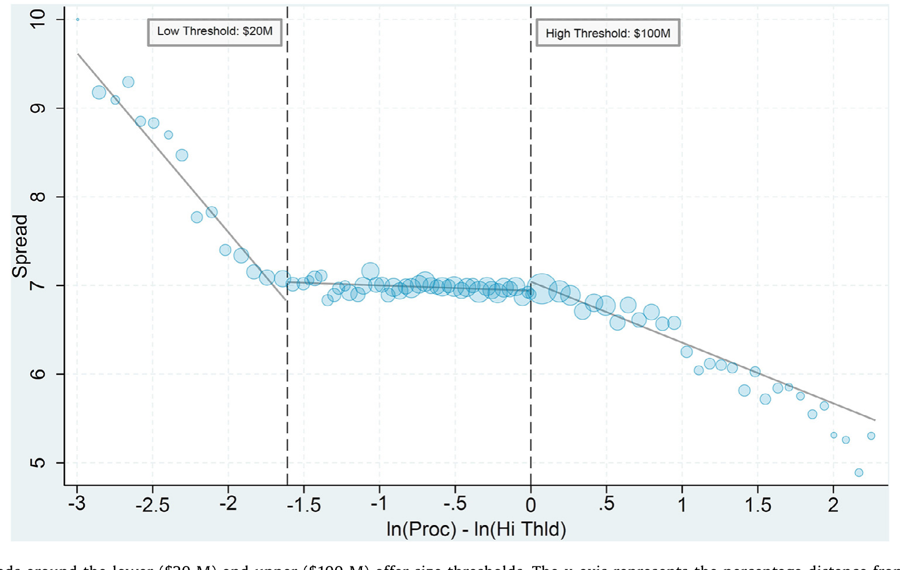
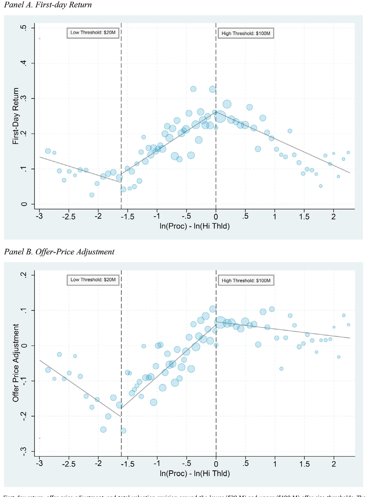
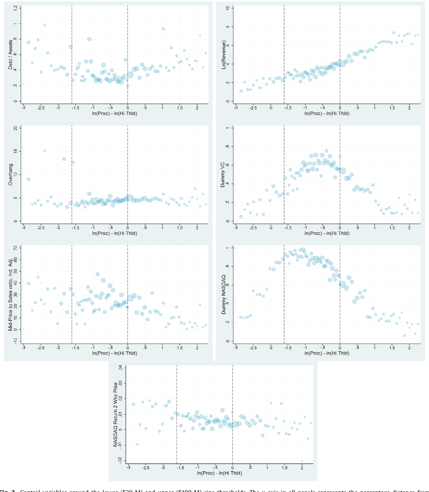
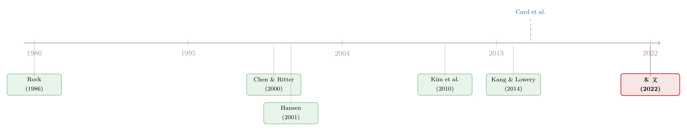

7% 这把「固定的尺子」，竟能改写新股的价格
本文读的是 Busaba & Restrepo (2022, Journal of Financial Economics)：美国投行对绝大多数 2000 万到 1 亿美元的 IPO 都收取固定 7% 的承销价差（即所谓「7% 方案」）。作者用一个模糊断点斜率回归 (fuzzy regression kink design, RKD)，借助价差在 $20M 与 $100M 两个门槛处的「折线」拐点，把价差对后续定价的因果效应「钓」了出来：价差越高，抑价越高，但发行价相对询价区间中点反而抬得更高。这意味着承销商不只是在「发现」投资者的估值，而是在塑造它。
1 引言：两个各自吵了二十年的谜
美国的 IPO 市场里，有两件事被人反复争论，却很少有人把它们放在一起看。
第一件，是承销费。投资银行对绝大多数中型 IPO 收取一个雷打不动的 7% 价差 (spread)。在本文 1996 至 2018 年的样本里，凡是募集规模 (gross proceeds) 落在 $20M 到 $100M 之间的 IPO，有 94% 都恰好被收了 7%。Chen and Ritter (2000) 给它起了个名字——「七个百分点的解 (the seven percent solution)」。一个如此整齐、又显著高于美国之外水平的价差，到底是承销商们心照不宣的合谋 (collusion)，还是竞争与效率的自然产物？这场争论吵了二十年，甚至惊动了司法部，2018 年还被一位 SEC 委员斥为「压在中型 IPO 头上一笔顽固而费解的税」。
第二件，是抑价 (underpricing)。新股上市首日往往大涨，发行人似乎把大把的钱「留在了桌上」。这同样吵了二十年：IPO 的定价究竟是竞争性的（Rock, 1986；Benveniste and Spindt, 1989），还是被承销商系统性地操纵了（Loughran and Ritter, 2004）？
一个被收取的「服务费」（价差），和一个被「留在桌上」的钱（抑价）——它们分别对应着承销服务市场与新股一级市场两笔账。奇怪的是，几乎没人认真问过：前一个市场的结果，会不会因果地决定后一个市场的结果？
这正是本文要补的那块空白。
2 难点：价差和抑价，是一对「难解的鸳鸯」
首先，一个自然的问题是：直接拿抑价对价差跑个回归不就行了？
不行。价差和抑价同时被一堆看得见、看不见的因素决定——公司质量、风险、行业景气、承销商声誉……任何与价差相关的变量，几乎注定也与抑价的（不可观测的）决定因素相关。这就是教科书式的内生性 (endogeneity)：你找不到一个既影响价差、又满足排他性约束 (exclusion restriction) 的传统工具变量。
之前少数尝试过的文献，结论恰恰打了架。Yeoman (2001) 在 OLS 里得到价差与抑价的负相关；Kim et al. (2010) 却得到正相关。更要命的是，Kim et al. (2010) 选工具变量的标准，仅仅是「这个变量在 OLS 里碰巧只和价差相关、不和抑价相关」——这套办法根本无法保证工具满足排他性约束。两篇文章都没有把「7% 方案」这个决定美国 IPO 价差的核心制度结构纳进来。
于是问题悬而未决：价差到底有没有、又是怎样影响新股定价的？
3 识别策略：把「7% 这把尺子」的折角，变成工具
但真正关键的一步在于——作者意识到，「7% 方案」本身就是一台天然的实验装置。
看 Figure 1。横轴是发行规模相对上门槛的对数距离 \(\ln(Proc) - \ln(HiThld)\)（\(Proc\) 为不含超额配售的募集额）。你会看到一条极有辨识度的折线：在 $20M 到 $100M 之间，价差几乎是一条压在 7% 上的水平线；可一旦跌出 $20M 或冲过 $100M，价差就变成一条随规模向下倾斜的曲线。换句话说，价差与发行规模的关系，在两个门槛处各有一个清清楚楚的拐点 (kink)——斜率突然改变。

Figure 1: IPO spreads around the lower ($20 M) and upper ($100 M) offer-size thresholds. The x-axis represents the percentage distance from the high o
这就是全文的「阿基米德支点」。作者用的工具，不是某个外生变量的水平值，而是这条关系斜率的突变。这正是断点斜率回归 (regression kink design, RKD) 的精髓：
- 普通的断点回归 (regression discontinuity, RDD) 识别的是结果在门槛处的跳跃（截距突变）；
- 而 RKD 识别的是结果对驱动变量 (forcing variable) 的斜率在门槛处的突变。
接着，因为价差在门槛内并非严格等于 7%（只是 94% 如此），这是一个模糊 (fuzzy) 而非精确的 RKD。它本质上是一个工具变量估计：第一阶段，用门槛处函数形式的变化去拟合「价差」；第二阶段，再看这个被工具化的价差如何影响抑价。其识别逻辑可以写成一个标准的模糊 RKD 估计量——分子是结果变量斜率的突变，分母是处理变量（价差）斜率的突变：
$$ \tau_{FRKD} \;=\; \frac{\displaystyle \lim_{x\to 0^{+}}\frac{dE[\,Y\mid X=x\,]}{dx} \;-\; \lim_{x\to 0^{-}}\frac{dE[\,Y\mid X=x\,]}{dx}}{\displaystyle \lim_{x\to 0^{+}}\frac{dE[\,Spread\mid X=x\,]}{dx} \;-\; \lim_{x\to 0^{-}}\frac{dE[\,Spread\mid X=x\,]}{dx}} $$
直觉是这样的：如果价差真的影响抑价，那么价差在门槛处「拐」了一下，抑价就应当在同一个门槛处也跟着「拐」一下；两个拐点幅度之比，就是价差对抑价的边际效应。Card et al. (2015) 为这套估计何时能识别出「平均边际效应」给出了严格的理论条件——他们正是用奥地利失业保险规则里的拐点，估出了失业津贴对失业时长的因果效应。
RKD 相比 RDD 有个微妙之处（Simonsen et al., 2016）：它需要足够宽的带宽，否则两侧斜率根本估不出来；而 RDD 理论上可以用趋近于零的带宽，因为它只要识别一个截距跳跃。这一点决定了本文必须在「靠近门槛（更干净）」与「样本量（更有功效）」之间反复权衡。
那么，抑价真的在同样的门槛处「拐」了吗？
4 第一个发现：抑价确实跟着价差「拐」了
看 Figure 2 的 Panel A。首日收益 (first-day return)，定义为 \(\ln(\text{first-day price}/\text{offer price})\)，与发行规模的关系，恰恰在 $20M 和 $100M 这两个同样的门槛处出现了拐点——拐点的位置与 Figure 1 里价差的拐点完全对齐，只是波动更大些（这并不意外，抑价本就更「吵」）。

Figure 2: First-day return, offer-price adjustment, and total-valuation revision around the lower ($20 M) and upper ($100 M) offer-size thresholds. Th
把这个拐点之比换算成系数，结论很硬：在最完整的设定下，被工具化的价差每下降 0.61 个百分点（恰好是一个标准差），抑价随之下降约 9.6 个百分点——这相当于样本中抑价标准差的约三分之一。这不是「显著」两个字能糊弄过去的量级，而是一个经济上举足轻重的效应。
这个方向，本身就是一记反转。
主流观点一直认为价差与抑价是替代品：要么是承销商攫取剩余的两条不同渠道（Kang and Lowery, 2014），要么是「价差不够、就用抑价来补」的补偿机制（Kim et al., 2010；Yeoman, 2001），要么是「高价差买来高质量承销、从而压低抑价」（Hansen, 2001；Ljungqvist et al., 2003）。在所有这些故事里，价差和抑价应当是负相关的。
可本文发现的是正相关。更妙的是，它顺手解释了一个文献里没人讲清的经验事实：在 $20M 到 $100M 之间（7% 几乎铁板一块的区域），抑价是随规模上升的；而在这个区间之外，抑价随规模下降。这条「折线」般的抑价—规模关系，正是「价差正向驱动抑价」这一机制的经验显影。过去用发行规模解释抑价的文献，要么假设、要么猜测两者是单调关系（线性或对数），从没发现这条折线。
于是一个更深的问题冒了出来：价差既然能推高抑价，它推高的到底是「发行价定低了」，还是「市场把价格炒高了」？
5 真正的反转：价差抬高的，是发行价本身
这一步，是全文最漂亮的地方。
作者把「定价」这件事拆成了两段：
- 定价调整 (offer-price adjustment)：发行价相对询价区间中点的位置，\(\ln(\text{offer price}/\text{midpoint})\)——这是承销商主动定出来的；
- 首日收益：上市后市场把价格往上抬的那一段。
教科书的惯性思维是：抑价高 = 发行价定低了。果真如此，价差推高抑价，就该是把发行价压低的结果。
但 Figure 2 的 Panel B 给出了相反的答案：价差越高，发行价相对中点反而抬得越高。具体地，价差每下降 0.61 个百分点，发行价相对中点会回落约 12.9 个百分点——约合样本中定价调整标准差的一半。也就是说，一个更低的价差，会让发行价定得更低，即便它同时压低了首日涨幅。
把两段加起来，就是「总估值修正 (total valuation revision)」，即 \(\ln(\text{first-day price}/\text{midpoint})\)——它等于定价调整与首日收益之和。价差每变动 0.61 个百分点，首日价相对中点的位置就同向变动 22.5 个百分点，约合总估值修正标准差的一半。而其中发行价吸收了略多于一半：承销商把价差带来的估值提升，部分地（slightly more than one-half）转移进了发行价，剩下的留给了首日涨幅。
这意味着什么？
既然价差能同时抬高发行价和首日收益，那它影响的就不止是发行价的设定，而是上市后市场所形成的价格本身。承销商因此不只是在「发现 (discover)」投资者预先存在的兴趣，而很可能是在塑造 (shape) 这份兴趣——通过它的营销与认证努力（而价差正是这种努力的代理变量）。
而这恰恰解开了文章开头那个「为什么抑价高就一定意味着发行价定低」的死结。在一个外生的（承销商无法影响的）上市后价格世界里，价差要无条件地抬高首日收益，就必须无条件地压低发行价——非此即彼。可一旦承销商能影响上市后价格，价差就能同时抬高发行价和首日收益。本文的数据，站在了后一种世界这边。
6 识别的体检：拐点设计最大的好处，是排他性可检验
然后，一个挑剔的读者会追问：你怎么知道这两个门槛处的拐点，真是价差造成的，而不是别的什么东西在门槛处恰好也拐了一下？
这正是拐点设计最优雅的地方——排他性约束可以被直接检验。逻辑是：如果某个协变量 (covariate)（公司年龄、风险、行业等）本身就在 $20M 或 $100M 处发生斜率突变，那它就可能是混淆因素。作者把一系列控制变量画在门槛附近（Figure 3），结论是：这些协变量在两个门槛处都不存在拐点，与定价结果形成鲜明对照。

Figure 3: Control variables around the lower ($20 M) and upper ($100 M) size thresholds. The x-axis in all panels represents the percentage distance f
此外作者还做了一整套体检：
- 无操纵：发行规模的密度在门槛附近平滑，没有 McCrary 式的「堆积」证据，说明发行人没有精确操纵募集额去够某个门槛；
- 固定效应：加入月度日期、主承销商、承销商数目、行业固定效应后结果依旧；也控制了文献中常用的定价解释变量；
- 数据驱动的门槛：用时变的、由数据定出来的门槛（而非武断的 $20M/$100M）结果不变；
- 带宽稳健：在不同带宽下估计稳定；
- 安慰剂门槛 (placebo thresholds)：在 $20M 到 $100M 区间内随便挑一个假门槛，效应就消失了——这是最有说服力的一击。
7 文献脉络：从「抑价之谜」到「7% 之谜」，再到把两者接上
把这篇文章放回它所在的那条河流里看，会更清楚它的位置。
最早，关于 IPO 抑价的理论奠基于 Rock (1986) 的「赢家诅咒」与 Benveniste and Spindt (1989) 的累计投标 (bookbuilding) 框架——抑价是承销商从知情投资者处「换取」真实信息的代价。这条线强调的是信息发现。

另一条线，则盯着那个整齐的 7%。Chen and Ritter (2000) 命名了「7% 方案」并把它读作隐性合谋的征兆；Hansen (2001) 针锋相对地提出「7% plus（抑价）合同」，论证固定价差既竞争又有效率——承销商用抑价去校准把一笔特定 IPO 承销到 7% 佣金所需的成本。此后 Ljungqvist et al. (2003)、Abrahamson et al. (2011)、Kang and Lowery (2014) 把合谋还是竞争的争论推向纵深，Kang and Lowery (2014) 更是估了一个最优合谋的结构模型。但这些文章，要么暗示、要么明示价差与抑价之间存在权衡 (tradeoff)，却几乎都没有真正去估计抑价作为价差的函数。
少数真去估的——Yeoman (2001) 与 Kim et al. (2010)——既没解决内生性，也没把「7% 方案」这一核心制度纳进来，结论还互相矛盾。本文的贡献，正是把方法论上的硬骨头（一个能满足排他性约束的工具）和制度事实（7% 方案造成的拐点）焊在了一起，并且在方法上接续了 Card et al. (2015, 2017) 的 RKD 理论、以及 Scharlemann and Shore (2016)（HAMP 减债）、Lundqvist et al. (2014)（地方就业补贴）等把 RKD 用于实证因果的传统。
（关于 IPO 定价为何会随制度环境而变，可对照《民主越成熟，新股就越不必「打折」？》；关于自由进入市场里抑价与证券设计的关系，可参见《自由进入的市场里，为什么钱还能「白赚」？》。）
8 评论与延伸（Q&A + 研究方向）
(a) 几个可能的疑问
Q：RKD 和 RDD 到底差在哪？为什么本文非得用 RKD？
因为「7% 方案」在门槛处改变的是价差—规模关系的斜率（折线），而不是价差的水平（没有跳跃）。RDD 识别截距的跳跃，这里没有跳跃可用；RKD 识别斜率的突变，正好对上。代价是 RKD 需要更宽的带宽来估两侧斜率，因而更吃样本量、对带宽更敏感。
Q：模糊（fuzzy）和精确（sharp）RKD 的区别在本文意味着什么？
区间内价差并非 100% 等于 7%，只有 94%。这使处理（价差）在门槛处的斜率突变是「不完全」的，于是要用第一阶段把价差工具化，再做第二阶段——本质上是个 IV。估计量就是结果斜率突变与处理斜率突变之比。
Q：「价差正向影响抑价」会不会只是因为大单本来就抑价高？
作者的安慰剂检验回应了这点：在 $20M–$100M 区间内任取一个假门槛，效应消失。真效应只发生在「7% 方案」真正造成斜率突变的那两个真门槛上，说明驱动结果的是价差结构，而非规模本身的某种平滑趋势。
Q：发现「价差抬高发行价」为什么是反直觉的、又为什么重要？
文献的惯性是「抑价高 ⇒ 发行价被定低」。但本文显示价差同时抬高发行价和首日收益，这只有在上市后价格本身能被承销商影响（而非外生）时才可能。它直接挑战了「只盯首日收益研究 IPO 定价」的做法，提醒我们更低的价差未必对发行人更有利。
Q：那这是不是就证明了发行价定价是「竞争性」的？
不能。作者很克制：发行价只部分调整（略多于总估值修正的一半），而部分调整在竞争性（如累计投标）与非竞争性（如前景理论）环境下都可能出现。本文证明的是价差能塑造估值，而非定价机制是否竞争。
Q：这对「7% 合谋还是竞争」的老争论给了什么新答案？
它没有直接裁决合谋与否，但给了发行人「为什么愿意接受 7% 结构」一个新解释：高价差换来的更积极营销，确实抬高了估值与发行价。它也修正了「抑价高=承销服务质量差」的简单论断——抑价也可以来自承销商的主动营销。
(b) 几个可能的研究问题与提案
1. 把这套 RKD 搬到公司债承销费上
【经济故事】公司债（尤其是高收益债）的承销费同样存在规模分段与「整齐」的定价惯例。若能找到费率随发行规模的拐点，就能识别承销费对一级市场定价（发行收益率溢价、二级市场首日表现）的因果效应。 【可行性】中。数据可用 Mergent FISD + TRACE；难点在于债券承销费的拐点是否像股票 7% 那样清晰、可定位。需要先做描述性工作确认拐点存在。
2. 外资承销商参与与「价差—抑价」关系的异质性
【经济故事】Ljungqvist et al. (2003) 已发现美国承销商/投资者的参与会同时影响价差与抑价。一个自然延伸是：当发行人跨境上市、由不同国别承销团主导时，「价差塑造估值」的强度是否不同？这能把承销商的「营销/认证」渠道与「市场结构」渠道分开。 【可行性】中。需要跨国 IPO 数据（如 SDC）与承销团国别信息；识别上可借用类似的费率拐点，但各国费率结构差异大，门槛未必干净。
3. 价差结构对发行后二级市场流动性的长期影响
【经济故事】如果高价差买来的是更积极的营销与更广的投资者基础，那它或许也改善了上市后的二级市场流动性。把「价差 → 估值」延伸到「价差 → 流动性」，能检验营销渠道是否有持久的真实后果。 【可行性】高。沿用本文的 RKD 第一阶段工具化价差，第二阶段换成上市后 N 个月的 Amihud/价差类流动性指标即可，数据（CRSP）现成。
4. 「7% 方案」在 SPAC / 直接上市等新通道下是否还成立
【经济故事】SPAC 与直接上市改变了承销商的角色与收费结构。比较传统 IPO 与这些通道下「费用—定价」关系的差异，可检验本文机制对承销商中介角色的依赖程度。 【可行性】中。SPAC 数据可得（参见《谁拿走了 SPAC 的蛋糕？》），但 SPAC 费用结构与 IPO 不可比，拐点设计难以照搬，更可能是描述性对照而非干净的 RKD。
我的判断
这篇文章最让我佩服的，是它把一个被嫌弃了二十年的制度「怪癖」——那个死板的 7%——变成了一把锋利的识别工具。结论的方向（价差正向驱动抑价、且抬高发行价本身）足够反直觉，又被安慰剂门槛、协变量平滑、密度无操纵等一整套检验顶住，可信度相当高。它对 IPO 文献的真正贡献，是把「只看首日收益」的研究范式撬开了一道缝：抑价不必然意味着发行价被压低，承销商可能在塑造而非仅仅发现估值。
对识别，我仍有两点想多看一眼。其一，模糊 RKD 的功效高度依赖第一阶段拐点的强度，文中那 6% 偏离 7% 的样本是否在两侧分布对称、是否驱动了拐点斜率，值得看弱工具诊断（文献里相关的检验可上溯 Stock and Yogo, 2005）。其二，「承销商塑造了上市后价格」是一个相当强的论断，目前是从「价差同时抬高发行价与首日收益」反推出来的；若能直接找到营销强度（路演天数、机构覆盖、分析师启动）作为中介变量，把「塑造」这条因果链补全，结论会更扎实。后续我最想看到的，是把这套拐点工具搬进公司债与信用市场——那里同样有整齐的承销惯例，却几乎没人用因果的眼光去看过承销费如何反作用于一级市场定价。
参考文献
- Abrahamson, M., Jenkinson, T., Jones, H. (2011). Why don't US issuers demand European fees for IPOs? Journal of Finance 66, 2055–2082.
- Benveniste, L.M., Spindt, P.A. (1989). How investment bankers determine the offer price and allocation of new issues. Journal of Financial Economics 24, 343–361.
- Busaba, W.Y., Restrepo, F. (2022). The "7% solution" and IPO (under)pricing. Journal of Financial Economics 144(3), 953–971.
- Card, D., Lee, D.S., Pei, Z., Weber, A. (2015). Inference on causal effects in a generalized regression kink design. Econometrica 83, 2453–2483.
- Chen, H.C., Ritter, J.R. (2000). The seven percent solution. Journal of Finance 55, 1105–1131.
- Hansen, R.S. (2001). Do investment banks compete in IPOs? The advent of the "7% plus" contract. Journal of Financial Economics 59, 313–346.
- Kim, D., Palia, D., Saunders, A. (2010). 见正文引用 Kim et al. (2010)（IPO 价差与抑价的工具变量估计）.
- Ljungqvist, A.P., Jenkinson, T., Wilhelm, W.J. (2003). Global integration in primary equity markets: the role of U.S. banks and U.S. investors. Review of Financial Studies 16, 63–99.
- Loughran, T., Ritter, J. (2004). Why has IPO underpricing changed over time? Financial Management 33, 5–37.
- Rock, K. (1986). Why new issues are underpriced. Journal of Financial Economics 15, 187–212.
- Scharlemann, T.C., Shore, S.H. (2016). The effect of negative equity on mortgage default: evidence from HAMP's principal reduction alternative. Review of Financial Studies 29, 2850–2883.
- Simonsen, M., Skipper, L., Skipper, N. (2016). Price sensitivity of demand for prescription drugs: exploiting a regression kink design. Journal of Applied Econometrics 31, 320–337.
- Stock, J.H., Yogo, M. (2005). Testing for weak instruments in linear IV regression. In Identification and Inference for Econometric Models. Cambridge University Press, 80–108.
- Yeoman, J.C. (2001). The optimal spread and offering price for underwritten securities. Journal of Financial Economics 62, 169–198.